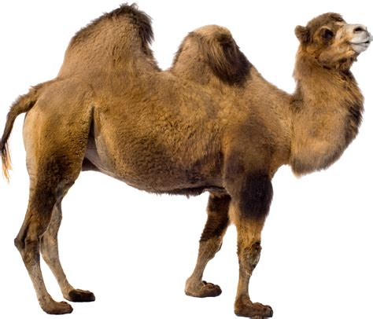

The four llamaas and two camels are camelids Camelids tend to be large and are strictly herbivorous. Camelids differ from ruminants in several ways. They have a three-chambered rather than a four-chambered digestive tract; an upper lip that is split in two with each part separately mobile; and an isolated incisor in the upper jaw. They have longs legs that because they lack tensor skin to bridge between thigh and body, look longer still. ( from Wikipedia)
|  | Camelid comparison | |||
|---|---|---|---|---|
| # of Humps | Indigenous region | Spits? | Produces Wool? | |
| Camels (bactrian) | 2 | Africa / Asia | Llama | Llama |
| Llamas | 1 | Andes Mountains | ||